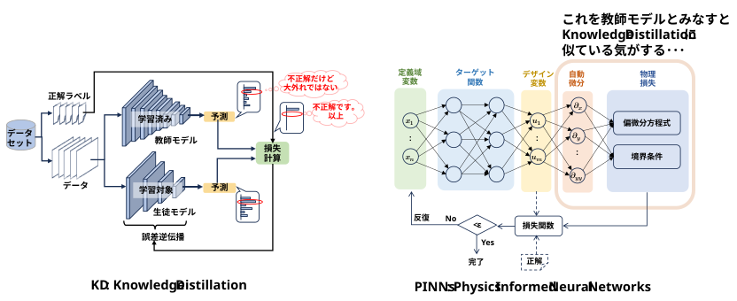

バックプロパゲーションの損失関数（Loss）の計算において、正解ラベル（Ground Truth）とモデルの推論結果（Prediction）だけでなく、「外部からのガイド信号（追加入力や拘束条件）」を組み込む手法は、機械学習の様々な領域で活用されています。
Contrastive Learning（対照学習）のポジティブ/ネガティブペア
特徴空間上で「近づけるべき類似データ（ポジティブ）」と「遠ざけるべき非類似データ（ネガティブ）」のインデックスや関係性がガイド信号としてLoss（InfoNCE Lossなど）に与えられます。
特徴空間上で「近づけるべき類似データ（ポジティブ）」と「遠ざけるべき非類似データ（ネガティブ）」のインデックスや関係性がガイド信号としてLoss（InfoNCE Lossなど）に与えられます。
トリプレットロス（Triplet Loss）におけるアンカー（基準データ）がガイドとして機能し、ポジティブ・ネガティブとの相対的な位置関係をLossに反映させます。
Posterior Regularization（後験正則化） / 規則ベースのガイド
自然言語処理や論理推論において、モデルの出力が「人間の定義した一貫性ルールや論理規則（例：『AならばBである確率が高くなければならない』）」を満たしているかを検証する手法です。
一階述語論理などの規則（Rules）が、確率分布を補正する正則化項（ガイド）としてLossに加算されます。
RLHF（人間のフィードバックからの強化学習）における報酬モデル（Reward Model）
LLMの調整などで使われます。バックプロパゲーション（PPOやDPOなど）のプロセスにおいて、正解テキストそのものではなく、人間好みの傾向を学習した別のモデルの出力を利用します。
報酬スコア（Reward Score）や、人間の好みの選好バイアスがガイド信号としてLossの計算に組み込まれます。
Classifier Guidance / Classifier-Free Guidance（拡散モデル）
画像生成（Diffusion Models）において、生成される画像の品質や方向性を制御する手法です。
別途訓練されたクラス分類器（Classifier）の勾配信号や、テキストプロンプトの埋め込みベクトルが、逆拡散プロセスのLossやスコア予測のガイドとして直接入力されます。
Anatomy-aware / Geometric Loss（医療画像・3D領域
医療画像セグメンテーションや3D形状復元などで用いられます。
単なる画素ごとの正解（Pixel-level GT）だけでなく、「解剖学的にあり得ない形状を排除する構造情報」や「物体の曲率・法線ベクトル」などの幾何学的拘束（Geometric Constraints）がLossの計算に動的に追加されます。